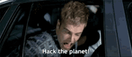

📀 Terceira Lei de Newton

Você não está logado.
📹 video.mp4
Vídeos produtivos da plataforma [YouTube]
🐝 Artigo: Abelhas em Extinção
Artigo sobre a importância das abelhas Ver Artigo
📀 Terceira Lei de Newton
🗓️ Calendário Dekatrian
Um calendário organizado e que faria sentido ser usado pela humanidade, diferente do calendário tradicional
Ver Calendário
🧑💻 Glossário de Redes
Página do senhor Evandro Blume atualizada em 03/09/2025
Acessar Página
Usuário: aluno424
Senha: 4242025
⌨️ Dê seu Feedback
Deseja dar sugestões de conteúdos? Ou comentar sobre melhorias? Pode ser até sobre o clima se quiser. Será que você pode reclamar de algo! Clique Aqui
🧬 Programação 04:00 AM
Sabe quando as pessoas dizem que algo não existe? Talvez esse algo exista, mas dificilmente pode ser encontrado.
🫵 Camila Dalcol da Silva
Você deve conhecer esse nome porque ele pertence a uma mulher advogada que me atropelou dia 26 de maio de 2024. Não estou dizendo que ela passou por cima de mim porque ela quis, mas estou mencionando ela aqui porque ela me fez pagar R$1000,00 para consertar o parabrisa do carro dela. Um carro que o seguro poderia muito bem cobrir os danos. Essa mulher apenas queria arrancar dinheiro de uma presa fácil e invulnerável.
Camila Dalcol da Silva visite aqui para saber mais.
📹 video.mp4
Black Mirror (tv series) chronological order.
🛡️ Informação
Use VPN (Virtual Private Network) para uma velocidade maior de bits. Lembre-se que usar VPN é fundamental para uma navegação mais segura e rápida.
📹 video.mp4
Lore (tv series) true stories based on true people and events.
🖋️ Poema: Hi Loneliness
Quando encontrou ela novamente
Dizia que era um pesadelo
Alucinava com a incerteza
de suas palavras
Até que abraçado por ela foi
Agarrava a ideia
de que precisava de companhia
Até que chegou um dia
Ele descobriu que
a única presença que precisava
era a de si mesmo
“Olá Solidão”, cumprimentou.
📗 Apostila: Enfermagem
Apostila: Enfermagem (feito com genspark.ai)
📹 Informação
Para que o seu aplicativo da Radio FM 609 funcione corretamente faça o que esse vídeo mostra.
🖼️ Gif do filme: Hackers (1995)

Hackeando o planeta!
🌐 Site Ultra Secreto?
Site Secreto (feito com lovable.dev)
🖼️ Imagem Gerada por IA
(feito com labs.google/fx)
📘 Apostila: Redes de Computadores
Apostila: Redes de Computadores (feito com genspark.ai)
✨ Apresentação da Rádio FM 609
Ver Apresentação (feito no gamma.app)
💻 Lista de IAs
abacus.AI (pago)
console.apify.com (limitado)
claude.ai (free)
deepseek.com (free)
gamma app (limitado)
gemini.google.com (free)
genspark.ai (free)
chatgpt.com (free)
labs.google/fx (free)
lovable.dev (limitado, mas bom)
manus.im/app (free)
mgx.dev (limitado)
app.n8n.cloud (pago)
notebooklm.google.com (free)
openrouter.ai (pago)
perplexity.ai (free)
app.sesame.com (limitado)
chat.qwen.ai (free)
grok.com (free)
📌 Sobre o Autor
Guilherme Carvalho está off-line de todas as redes sociais.
📹 video.mp4
Guilherme Fumando com Estilo
📹 video.mp4
Black Mirror (tv series) chronological order.
📹 video.mp4
Itaí com Cássia Taísa, Guilherme Carvalho, Thales Júnior e Maria Gabriela.
📹 video.mp4
Thales procurando correntinha perdida
Aplicativo Móvel
Leve a FM 609 para onde você for